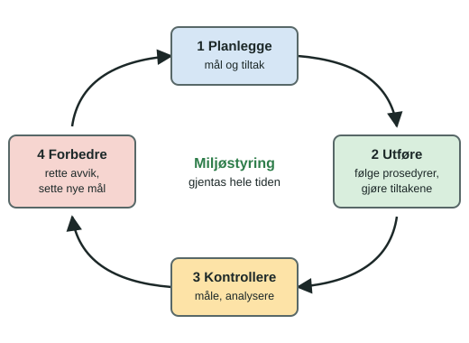

Lover, kvoter og miljøstyring
En bedrift kan ikke slippe ut det den vil. Myndighetene setter grenser, og utslipp av CO2 koster penger. Mange bedrifter har i tillegg et eget system for å arbeide med miljøet hele tiden. Her lærer du hvordan disse reglene og systemene virker.
Utslippstillatelsen
Etter forurensningsloven er all forurensning forbudt, med mindre den er tillatt. Prosessbedrifter med betydelige utslipp må derfor ha en utslippstillatelse. For store industribedrifter er det Miljødirektoratet som gir den, for andre er det statsforvalteren. Den setter grenser for hvor mye av hvert stoff bedriften kan slippe ut. Bedriften må selv måle utslippene og rapportere dem hvert år. Tallene blir offentlige, så alle kan se hvor mye hver bedrift slipper ut.
Myndighetene kan stramme inn tillatelsen når det kommer bedre teknologi. Da må bedriften gjøre nye tiltak. Mer om utslippstillatelsen og miljøprøvene står på siden Utslipp og miljøprøver.
Klimakvoter
Norge er med i EUs kvotesystem for klimagasser. Det virker slik:
- For hvert tonn CO2 bedriften slipper ut (eller like stor klimaeffekt fra andre klimagasser), må den levere én klimakvote.
- Det finnes bare et bestemt antall kvoter, og antallet blir mindre hvert år. Da går de samlede utslippene ned.
- Kvotene kan kjøpes og selges. En bedrift som kutter utslippene, trenger færre kvoter og kan selge dem den har til overs.
Slik får bedriftene betalt for å kutte, og det lønner seg å kutte der det er billigst først.
Industri som konkurrerer med bedrifter i land uten slike krav, får en del kvoter gratis. Grunnen er faren for karbonlekkasje: Hvis det blir for dyrt å produsere i Europa, kan produksjonen flytte til et land med svakere krav. Da blir utslippene i verden ikke mindre, kanskje større, og arbeidsplassene forsvinner.
Regneeksempel
Oppgave: Et smelteverk slipper ut 120 000 tonn CO2 i året. Tenk deg at en kvote koster 900 kr. Bedriften vurderer å bytte noe av koksen med biokarbon, slik at de fossile utslippene, som krever kvoter, går ned med 10 %. Hvor mye sparer bedriften på kvoter i året?
Løsning:
- Kostnad i dag: \( 120\,000 \text{ tonn} \cdot 900 \text{ kr/tonn} = 108\,000\,000 \text{ kr} \), altså 108 millioner kroner.
- De fossile utslippene går ned med 10 %: \( 120\,000 \text{ tonn} \cdot 0{,}10 = 12\,000 \text{ tonn} \).
- Sparte kvoter: \( 12\,000 \text{ tonn} \cdot 900 \text{ kr/tonn} = 10\,800\,000 \text{ kr} \).
Svar: Bedriften sparer 10,8 millioner kroner i året på kvoter. Om tiltaket lønner seg, avhenger av hva biokarbonet og ombyggingen koster.
Tallene er tenkte. Kvoteprisen går opp og ned med tilbud og etterspørsel.
Miljøstyring
Mange bedrifter har et miljøstyringssystem. Det er en fast måte å planlegge, gjennomføre og følge opp miljøarbeidet på, slik at det ikke blir tilfeldig. Den mest brukte standarden er ISO 14001. En bedrift som følger standarden, kan bli sertifisert. Det betyr at en uavhengig revisor har kontrollert at systemet virker.

Sirkelen er den samme som brukes i kvalitetsarbeid og i kontinuerlig forbedring. Mindre bedrifter, som verksteder og kontorer, bruker ofte ordningen Miljøfyrtårn i stedet for ISO 14001.
Kundene stiller også krav
Flere og flere kunder vil vite hvor store utslipp det har vært for å lage produktet de kjøper, for eksempel hvor mange kilo CO2 det er per kilo metall. Et metall med lave utslipp kan bli mer verdt. Derfor er miljøarbeid ikke bare en plikt, men også et konkurransefortrinn.
Miljøstyringssystemet er noe du jobber i hver dag. Operatøren følger prosedyrene, fører logg og melder avvik når et utslipp er unormalt. Laboranten tar og analyserer prøvene som viser om bedriften holder seg innenfor tillatelsen. Uten riktige målinger kan bedriften ikke vise at den følger loven.
Test deg selv
1. Hva sier forurensningsloven?
- Alle utslipp er lov så lenge de er små
- All forurensning er forbudt, med mindre den er tillatt
- Bedriften bestemmer selv hvor mye den kan slippe ut
Derfor trenger bedriften en utslippstillatelse fra myndighetene.
2. Hvordan virker kvotesystemet?
- Bedriften betaler en fast bot hvert år
- Bedriften må levere én kvote per tonn CO2, og antallet kvoter blir mindre hvert år
- Bedriften får lov til å slippe ut så mye den vil, så lenge den måler det
Når det blir færre kvoter, går de samlede utslippene ned. Bedrifter som kutter, kan selge kvotene de ikke trenger.
3. Hva er karbonlekkasje?
- En lekkasje av CO2 fra et rør
- At karbonet lekker ut av smelteovnen
- At produksjonen flytter til et land med svakere klimakrav, så utslippene i verden ikke går ned
Derfor får industri som konkurrerer internasjonalt, noen kvoter gratis.
4. Et tiltak kutter 5 000 tonn CO2 i året. Kvoteprisen er 900 kr per tonn. Hvor mye sparer bedriften på kvoter?
- 450 000 kr
- 4 500 000 kr
- 45 000 000 kr
\( 5\,000 \text{ tonn} \cdot 900 \text{ kr/tonn} = 4\,500\,000 \text{ kr} \), altså 4,5 millioner kroner.
5. Hva er ISO 14001?
- En lov om utslipp til vann
- En standard for hvordan en bedrift kan styre miljøarbeidet sitt
- Et måleinstrument for CO2
ISO 14001 beskriver et miljøstyringssystem: planlegge, utføre, kontrollere og forbedre, om og om igjen.
Ordliste
| Begrep | Forklaring | Engelsk |
|---|---|---|
| utslippstillatelse | En tillatelse fra myndighetene som sier hvilke stoffer og hvor mye bedriften kan slippe ut. | discharge permit |
| klimakvote | En rett til å slippe ut ett tonn CO2 eller tilsvarende. Kvoter kan kjøpes og selges. | emission allowance |
| karbonlekkasje | At produksjon og utslipp flytter til land med svakere klimakrav, i stedet for at utslippene blir mindre. | |
| miljøstyringssystem | En fast måte for en bedrift å planlegge, gjennomføre, kontrollere og forbedre miljøarbeidet på. | environmental management system |
| sertifisering | At en uavhengig revisor har kontrollert at bedriften følger en standard, for eksempel ISO 14001. | certification |
Les mer
- Utslipp og miljøprøver i HMS.
- Miljødirektoratet (miljodirektoratet.no) har informasjon om utslippstillatelser og kvotesystemet.
- På norskeutslipp.no kan du se utslippene fra bedrifter i nærheten.
Om kildene: Teksten, eksemplene og figurene på denne siden er laget for dette nettstedet. Siden bygger på undervisningsopplegg i kjemiprosess- og laboratoriefag ved Sauda vgs, som er utarbeidet med utgangspunkt i blant annet Kjemien stemmer, Laboranten og åpne nettkilder.